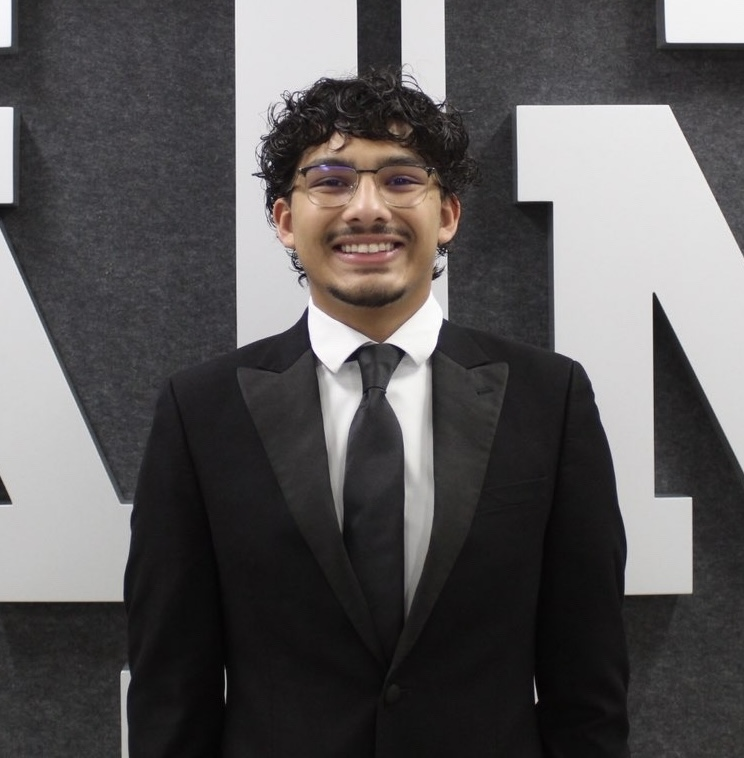

MIS & AI EthicsWebsite & OverviewJason Casanova, Nicholas Nunez, Emma Ing, Madison Anding, Pragya VetriOctober 29, 2026Jason Casanova Setting up the foundational HTML code for this website taught me how much structure and organization go into building a functional webpage from scratch. I learned that Management Information Systems are essential for connecting data, technology, and people to help businesses run smoothly. Exploring AI ethics showed me that while artificial intelligence is a powerful tool, it must be used responsibly to maintain academic integrity rather than just taking shortcuts. Working on the security layout opened my eyes to the reality of modern cyber threats and why strong network defense is so critical today. Managing the common code template was a great experience because it allowed me to problem-solve formatting issues and ensure my team had a solid starting point. Overall, this project gave me a much better understanding of how digital infrastructure operates behind the scenes. jasoncsnv@tamu.eduNicholas NunezThroughout this project I learned a lot about Management Information Systems. How they help businesses organize information and make better decisions. I also learned about intelligence and how it can make everyday tasks easier and why it is important to use AI responsibly in school and in the workplace. Another important thing I learned was, about cybersecurity. How it helps protect personal and business information from online threats. While working on my part of the project I learned how to use HTML to create a homepage add images insert links and organize information into tables. This project also helped me understand how different technologies work together and how much we rely on them in our lives. Overall I gained an understanding of Management Information Systems, artificial intelligence and cybersecurity while also improving my basic website-building skills. nich23@tamu.eduEmma IngThrough this project, I learned how to use HTML to organize information and make a website easier to read. I learned how to create different types of lists, including numbered, Roman numeral, and bullet point lists. I also learned how to use tags to format text, center paragraphs, and highlight important information. I also learned how to insert images and make them clickable links to other websites. I practiced adding links to Word and PDF documents and creating scrolling text using the marquee tag. Overall, this project helped me become more comfortable with HTML and understand how different elements work together to create a webpage. emmaing@tamu.eduMadison AndingIn this project I learned how Management Information Systems (MIS) help businesses organize all their information and make better decisions. I also learned how AI can help improve efficiency through automation, while also facing challenges like potential bias, privacy concerns, and ethical concerns. By researching information security I came to a better understanding of the importance of protecting sensitive information from cyberattacks and unauthorized access. One of the most valuable parts of this project to me was learning how to code in HTML for the first time and use it to build a functional website. Specifically learning how to embed images, organize content using HTML tags, and create clickable email links that allow visitors to contact team members directly. Overall, this project helped me to better understand how both MIS, AI, and security work together in the modern business world. madisonanding0@tamu.eduPragya VetriFrom this project, I learned more about how HTML and CSS work together to create a website. I learned how to add different elements like images, links, and text and organize them on a page. I also got more practice with CSS and figuring out how to make everything look the way I wanted. One thing I struggled with was getting certain parts of the website to line up correctly. I learned how to go back through my code and fix small mistakes when something wasn’t working. Overall, this project helped me get more comfortable with HTML and understand how much goes into making a website. pragya12@tamu.edu |